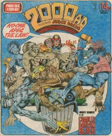
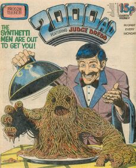
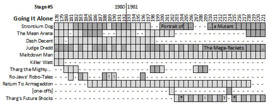
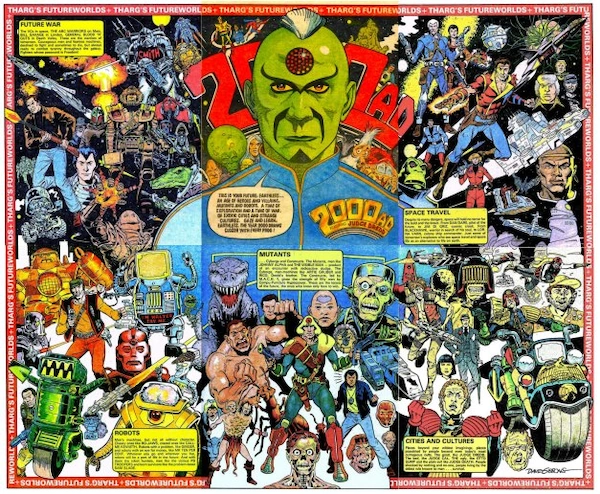

|
 |  |
| Prog 179 by Carlos Ezquerra | Prog 184 by Mike McMahon | Prog 216 by Brian Bolland |
Prog 178 sets out a stall: no more mergers! This is now "2000 AD featuring Judge Dredd" and we get a new logo, a free gift and a fresh line-up with five key thrills: Strontium Dog, The Mean Arena, Judge Dredd, Meltdown Man and Killer Watt. With the last of those only lasting for two progs, Return to Armageddon is drafted in and the roster remains quite stable throughout this stage (only being interrupted by filler strips).
Is this the beginning of the comic's first golden age?
Strontium Dog
Returning from a 59-prog hiatus, Strontium Dog kicks down the door with arguably the strongest run of the series. Before things got grim and characters we loved started to die off we could just enjoy the thrill of seeing Johnny and Wulf on their bounty hunting missions (mixing up the commercial side of Wulf with the big heart of Alpha). Being able to sympathize with people hunters is one of the great strengths of the series. Whilst all the stories here are powerful classics (Death's Head, The Schicklegruber Grab, The Doc Quince Case & The Bad Boys Bust) it's the seminal Alpha origin story Portrait of a Mutant that proves absolutely vital.
Returns in the next stage...
The Mean Arena *NEW THRILL*
Parkour meets Rollerball. In a hyper-violent, near-future, close-combat, team sport: star player Matt Tallon seeks revenge for his brother's suspicious death. Where Harlem Heroes focussed on the team, this wisely has a central hero and a dramatic question, with other members of the team sketched in as needed. There's a theory that this may have been cribbed from the novel Killerbowl but where inspiration (or homage) ends and plagiarism begins is a stormy sea and early 2000 AD often sailed close to the wind.
The first 19 episodes are often titled as "The Southhampton Sharks" in collections (and the first page is entirely missing from the Extreme reprint), but actually the first 5 episodes feature a game against the Wakefield Warriors, the next 4 are a US-set flashback sequence (the Florida Fiends against Tallon's previous team the St. Louis Leopards) and then we get 10 episodes of "The Southampton Sharks" taking us up to prog 202. After a 15-prog hiatus, we get The Jensens, with art by Steve Dillon: a storyline that continues into the next stage. Prog 219 challenges readers to come up with their own team designs for later use in the strip.
Dash Decent *NEW THRILL*
This pastiche of old black & white Saturday morning serializations of Flash Gordon provides the last of the triumvirate Bonjo - Klep - Dash.
Apart from a brief 2000 AD Annual appearance, this is it for Dash. The next foray into single-page comedy strips is probably Sooner or Later in '86.
Judge Dredd
As The Judge Child saga ends and Dredd returns to Mega-City One we're left with the dangling thread of Owen Krysler and predictions of future doom, but the most far-reaching effects of the tale have been the introduction of Judge Hershey and The Angel Gang (in particular Mean Machine). It's not long before another brother is added to the mix in The Fink (193-196).
Otto Sump returns with his Ugly Clinics (186-188), inspiring Who Killed Pug Ugly? (203). Block War (182) and Pirates of the Black Atlantic (197-200) foreshadow perhaps the most far-reaching and famous of all Dredd epics, but that's for a later stage. Unamerican Graffiti introduces Marlon 'Chopper' Shakespeare (who we'll meet again, of course) and The Mega-Rackets provides an umbrella for eight shorter stories of organized crime in Mega-City One (some of which, like The Umpty Baggers, had already been introduced in earlier tales).
So, this is a stage that cements the past, harks to the future and builds up Mega-City One as a living, breathing place. You've got to build it up before you knock it down...
The Mega-Rackets have their final Crime File in the next stage...
Meltdown Man *NEW THRILL*
Charles Bronson in Planet of the Furries. This epic saga marks a record in 2000 AD: a fifty-one prog unbroken run by Massimo Belardinelli. Nick Stone finds himself blasted into a future where animal hybrids (yujees) are a slave race to a human elite.
Continues to its conclusion in the next stage...
Killer Watt
The second stepping stone (after Terror Tube) towards a full series of Nemesis the Warlock, this sees Torquemada chase Nemesis (still unseen within the Blitzspear) through some 'phone lines and get destroyed. Unfortunately, simple corporeal death can't stop Torquemada's evil spirit.
The influence of Terror Tube and Killer Watt reverberate through this stage, building towards an eventual series (starting in prog 222). As we wait, we get three Star Pin-ups: Torquemada (184), the Blitzspear (187) and the Official Gundola (195), and finally a reveal of Nemesis himself, not in the prog, but in the 1981 Sci-Fi Special (in a 5-page thrill sometimes titled The Sword Sinister, sometimes known as Olric's Great Quest).
Tharg the Mighty
Alien editor deals with various assaults on thrill power.
More in the next stage....
Ro-Jaws' Robo-Tales
Gary Rice continues to dominate with memorable tales such as The Tidy Up Droid and Miracle in Slum Alley. Alan Moore invents a recurring character in the two-part Final Solution (189-190) featuring Abelard Snazz: a literal four-eyed geek who causes chaos as his hubris outweighs his supposedly vast intellect.
This ends the Robo-Tales and we switch back to Future Shocks, one of which features Abelard Snazz (see below)...
Return to Armageddon *NEW THRILL*
Space pirates (yay!) unwittingly release a super-Satan whose fraternal twin hopes to avert galactic armageddon with the help of a one-armed robot, a magic sword and a beatiful woman. Thirty-five progs of barmy space opera beautifully rendered by Jesus Redondo.
One and done.
[one-offs]
These probably belong under a Future Shock banner, but occasionally a story would just appear as its own thing: in this case we get Last Thought and The English / Phlondrutian Phrasebook.
Yeah, these keep happening...
Tharg's Future Shocks
This season of Shocks starts to bear fruit in the form of Abelard Snazz (swinging in from the Robo-Tales with The Return of the Two-Storey Brain in prog 209), Joe Black (in 204's often incorrectly named Trail and Error and 216's The Man Who Was Too Clever) and one of the characters from prog 213's Slashman, Kowalski and Rat.
All three of these characters (Snazz, Black and the other one that I'm deliberately not naming in a vain attempt to avoid a spoiler from 1981) return in later stages...
The Future Worlds poster is a great example of how barmy and interactive this era was: not for the first or last time Tharg would joyfully instruct us to cut the comic up and paste bits of it to a big sheet of card - which is exactly what I did. The downside is that in the process you ended up destroying two pages of Meltdown Man and half of a one-off (Last Thought).
The result, though, was an awesome artifact - and given that I only started my regular collection during this phase, a lot of the characters on the poster seemed like an untouchable dream world: it's such a great celebration from 2000 AD of having 200 progs under their belts.
